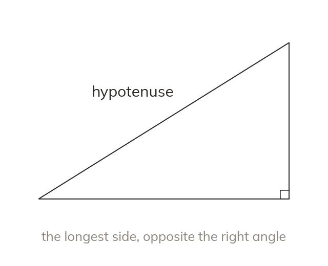
The hypotenuse
In a right-angled triangle the hypotenuse is the longest side, opposite the right angle. It stays the same whichever angle is chosen.
Trigonometry finds lengths and angles that cannot be measured directly, such as the height of a cliff. It starts with naming the sides of a right-angled triangle.
Work down the page at your own pace. Write every answer in your book first, then click to check it.
Read each card, then follow the worked examples one step at a time.

In a right-angled triangle the hypotenuse is the longest side, opposite the right angle. It stays the same whichever angle is chosen.
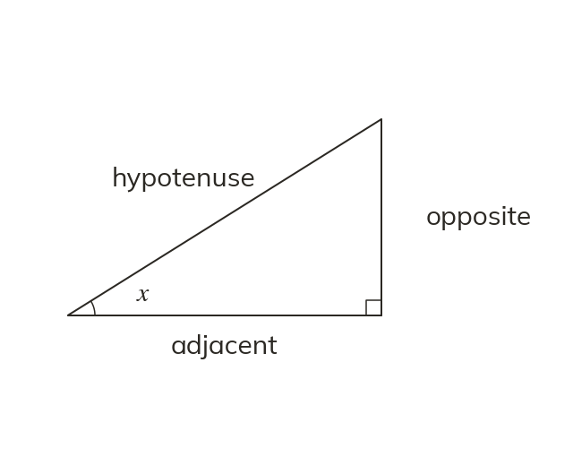
The opposite side faces the chosen angle. The adjacent side lies between that angle and the right angle. They are shortened to , and .
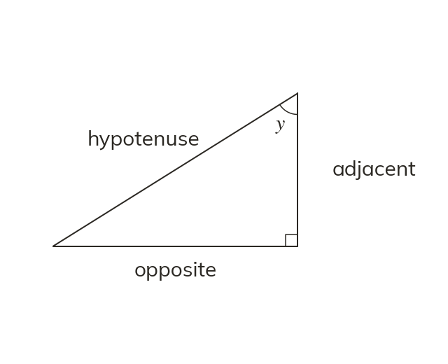
Choosing the other angle swaps the opposite and adjacent sides. The hypotenuse stays where it is.
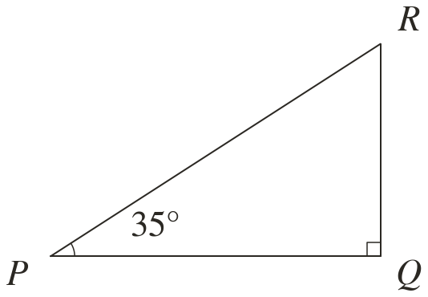
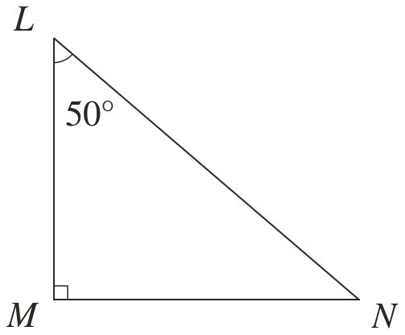
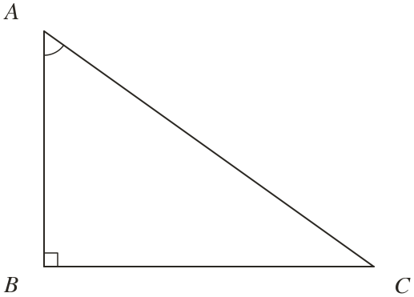
Pick an answer. If it's wrong, the feedback tells you which mistake it was.

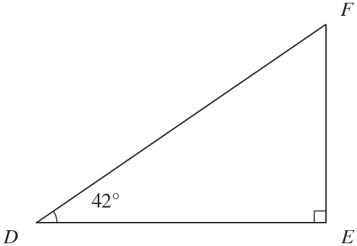
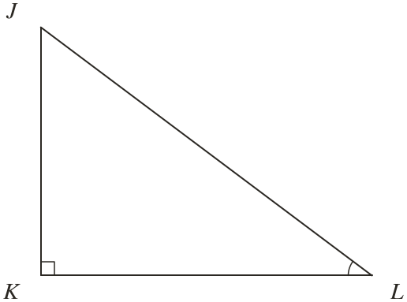
Read each card, then follow the worked examples one step at a time.
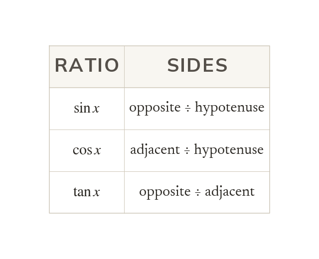
The three ratios are sin, cos and tan. For a given angle, each ratio is a fixed number.
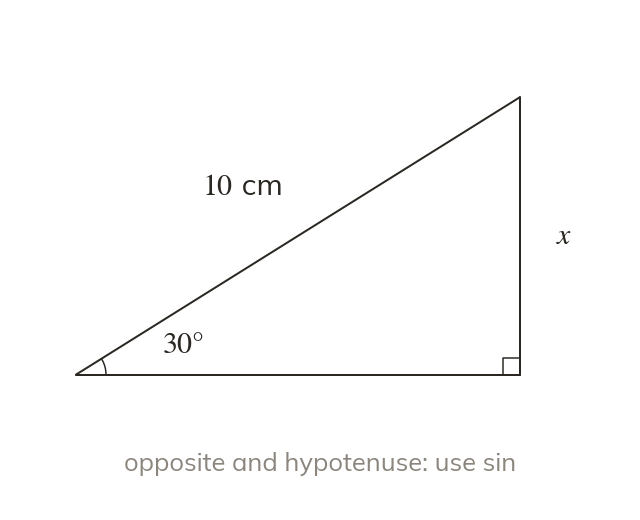
The side you know and the side you want decide the ratio. The ratio that uses exactly those two sides is the one to use.
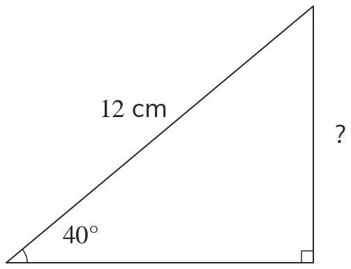
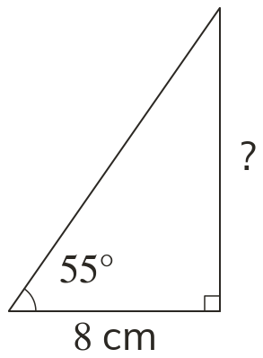
Pick an answer. If it's wrong, the feedback tells you which mistake it was.
Finished? Next lesson: 10.19.2 Finding a Missing Length.
For each skill, tap the one that is true for you today. Your Revise pages start with anything you mark Not yet.
Your ratings are saved on this device only.
Log in, then search for a code to practise that skill.